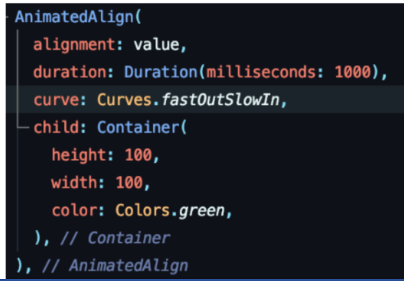

As animações explícitas no Flutter são aquelas que você cria e controla manualmente
Elas permitem animar
diferentes propriedades de um widget, como posição, tamanho, opacidade e rotação.
As animações implícitas no Flutter são animações préconstruídas que são aplicadas automaticamente a certos widgets
Curve é usado para dizer como a animação irá se portar, ou seja, como ela irá ocorrer.
● É o mais poderoso tipo de animação com Flutter. Você tem o total controle sobre ela: iniciar, parar, repetir, reverter... não importa o "movimento.
● São úteis para criar animações complexas e personalizadas.
● Os widgets são os blocos de construção fundamentais no Flutter, permitindo criar interfaces de usuário flexíveis e reutilizáveis.
● O Flutter oferece a flexibilidade de criar widgets personalizados para atender às necessidades específicas do seu aplicativo. Aqui estão alguns pontos importantes sobre a criação de widgets personalizados:
● O Flutter possui uma vasta biblioteca de plugins que permitem acessar os recursos do dispositivo, como câmera, geolocalização, sensor de acelerômetro, armazenamento local e muito mais.
●Esses plugins facilitam a integração do Flutter com os recursos nativos do dispositivo, permitindo que você crie aplicativos mais poderosos e interativos.
Os tes tes unitários são usados para tes tar funções e métodos individuais do código. Eles garantem que cada unidade de código funcione corretamente e produza os resultados esperados
Os testes de widget são usados para verificar o comportamento e a aparência vi sual dos widget s em respos ta a diferentes interações . Eles ajudam a garantir que os widget s sejam renderizados corretamente e que suas interações com o usuário funcionem conforme o esperado.
Os testes de integração são usados para verificar a integração correta entre diferentes partes do aplicativo. Eles testam a interação entre componentes, como widget s, serviços e API externas, para garantir que tudo funcione em conjunto de maneira adequada.
No início de um teste unitário, você pode configurar o ambiente e fornecer os dados necessários para o teste. I sso pode envolver a criação de objetos, a definição de valores iniciais e a preparação de qualquer outra condição necessária.
A etapa de execução do teste unitário envolve a chamada da função ou método que você deseja testar, passando os parâmetros adequados. O objetivo é executar a unidade de código e obter o resultado esperado.
Comparar o resultado obtido com o resultado esperado usando asserções. As asserções são declarações que verificam se uma determinada condição é verdadeira. Se o resultado obtido não corresponder ao esperado, o teste falhará e um erro será relatado.
Os testes de widget garantem que os widget s se comportem corretamente em diferentes situações. I sso pode envolver testar a aparência visual, as transições, a interação com o usuário e a manipulação de estados
Os testes de widget garantem que os widget s se comportem corretamente em diferentes situações. I sso pode envolver testar a aparência visual, as transições, a interação com o usuário e a manipulação de estados
Durante os testes de widget, você pode criar diferentes cenários para verificar o comportamento dos widget s. I sso pode incluir diferentes entradas do usuário, diferentes estados de aplicativo ou diferentes disposições de widget s.
No início de um teste unitário, você pode configurar o ambiente e fornecer os dados necessários para o teste. I sso pode envolver a criação de objetos, a definição de valores iniciais e a preparação de qualquer outra condição necessária.
A etapa de execução do teste unitário envolve a chamada da função ou método que você deseja testar, passando os parâmetros adequados. O objetivo é executar a unidade de código e obter o resultado esperado.